Navigace |
Prvomájová strakatá demonstrace v ĎáblicíchNěkdo vzal útokem centrum, my strakáčníci zamířili na periferii - do Ďáblického háje. V silném složení Bela, Ford, Jaga s Borem a Nela si to psiska náležitě užila. 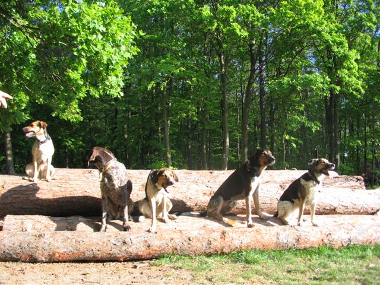 Hned v úvodu si Jaga s Nelou zobly v lese nějakou dobrotu přikrytou toaletním papírem, tak jsme se s Hankou hezky proběhly hustým lesním porostem - šlo nám to ale přeci jen pomaleji než psům. Tuhle psí delikatesu si pak ještě chtěli zkusit při návratu zpět i Bela s Fordem (Jaga s Nelou už byly tou dobou z obligátních důvodů na vodítku:-) ). Zkrátka, muselo tam být něco extra.
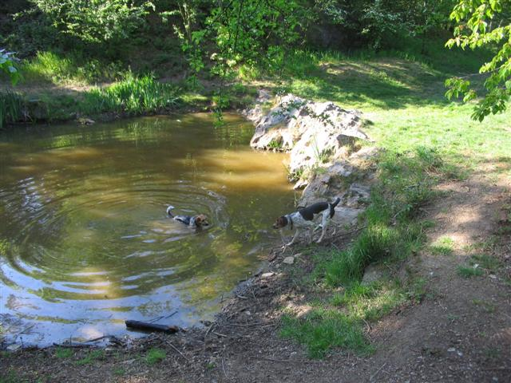 Nela ve vodě a Jaga už se blíží ze břehu. Vzápětí už byl ale první rybníček, kam si naše kachna Nela (respektive Český bahenní pes) šla jako první zaplavat, Jaga s Borem se vzápětí přidali. Ford se decentně čvachtal podél břehu, ale jen tak po lokty, aby si nezkazil svou reputaci elegána. 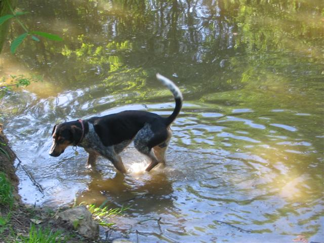 No, vzhledem k přetrvávajícímu suchu jsme již na počátku procházky měli téměř jistotu, že po návratu bude vícero psů doma vykoupáno:-)
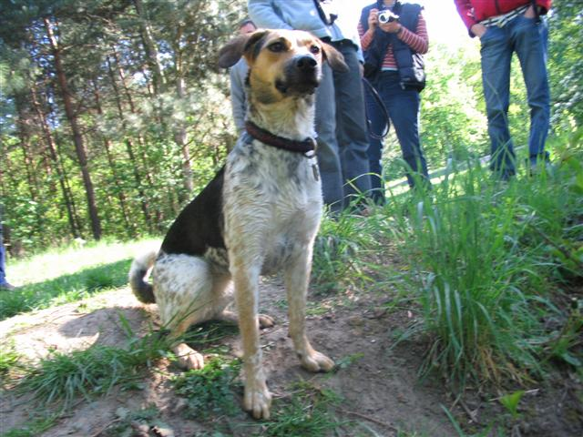 Nela uráchaná z prvního rybníčku, ještě se chudinka třásla, ale proti tomu už jsme otrlí ... po lednovém koupání. 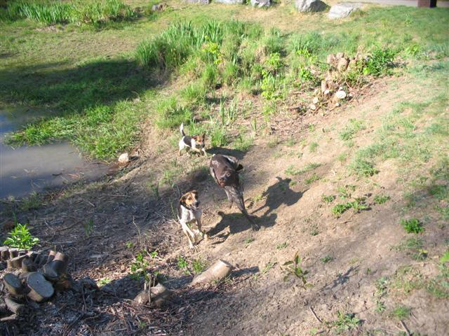 Psi vesele dováděli po cestách i v okolních lesních křoviscích a vířili prach. Obvzláště trojice Jaga, Boro, Nela byla velice akční. Boro, jediný nestrakáč mezi námi, však nesl stíhání od těch dvou velice statečně a chvílemi si raplil po lese jen tak sám. Pak tu bláznivou štafetu v běhu převzala Jaga a vydrželo jí to opravdu překvapivě dlouho, až jí nakonec i Nela přestala stíhat a číhala jen na cestičce, až Jaga zase přilítne. Ford pobíhal většinou před námi a vyhlížel přírodní zajímavosti.
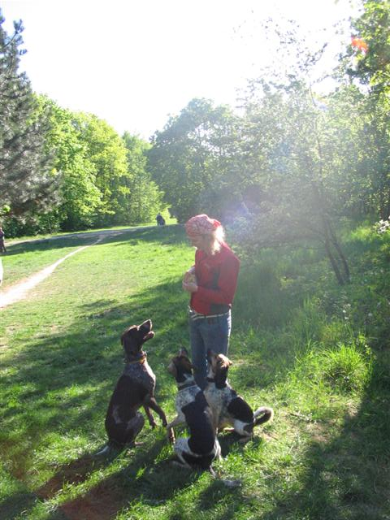 Charisma pro psy mi nedodávala ani tak sluneční aureola jako pytlík s piškotami:-)
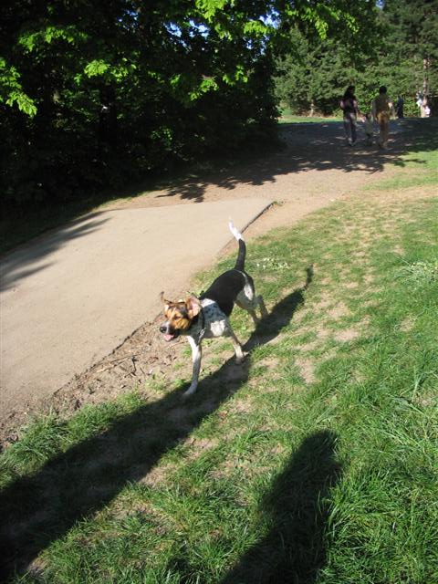 Jaga v akci, upozornila bych zejména na nezaměnitelný výraz uší. Po chvíli přišel rybníček číslo 2. Nejdřív jsme si mysleli, že je to potáhne víc na dětské hřiště, tedy za dětmi, ale pak u všech, včetně Forda (ale opět jen po lokty) zavládl jakýsi pradávný pud vodních buvolů a šlo se zase do vody, tentokrát nejen zaplavat si a napít se, ale i popást se na čerstvé vodní vegetaci.
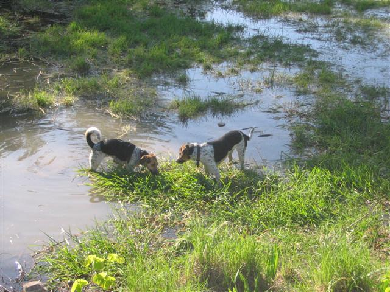 Po opuštění rybníčku následoval nevšední zážitek. Potkali jsme psa. Ale nebyl to obyčejný pes, byl to takový TEN PES, u kterého vás na při prvním pohledu napadne, že by se na něm dalo jezdit jako na koni:-) Ostatně i Ford, Jaga, Boro a Nela byli z urostlého irského vlkodava poněkud vyplesklí.
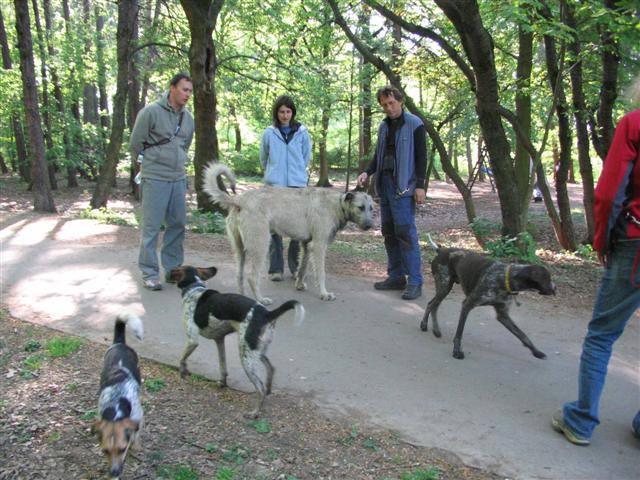 Pak už jsme se mohlu uvítat s další posilou - dorazili Zuzka s Milanem, Křemílkem a Belou. Pro Křemílka byla účast na strakaté procházce premiérou (pokud nepočítám procházky v prenatálním stádiu), ale asi se mu ten výšlap líbil, protože po celou dobu byl u Zuzky v šátku a vzorně spinkal.
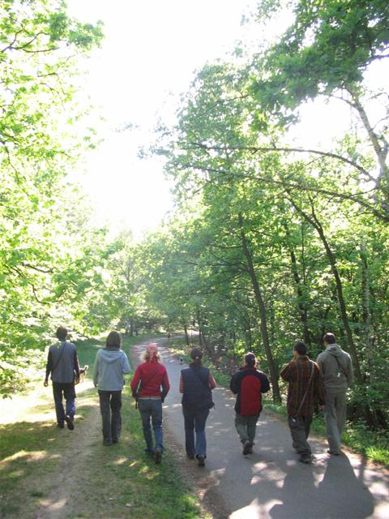 Konečně taky nějaká fotka páníčků, sice jen záda, ale zase je vidět to odhodlání v kroku - kupředu, za psi (ať nám neutečou, jak některé z nás, přiznávám, napadlo:-) ) Zleva Martin, Hanka, já, Ivča, Zuzka s Křemílkem, Milan a Pavel a Rudolf za foťákem.
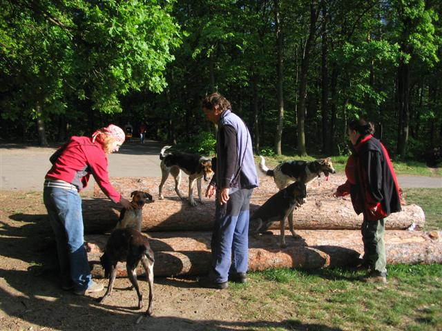 Bylo vidět, že jsme od podzimu na tolika společných procházkách nebyli a ztratili jsme cvik na společná fota. Udržet všech pět psů na kládách pohromadě byl složitý úkol. 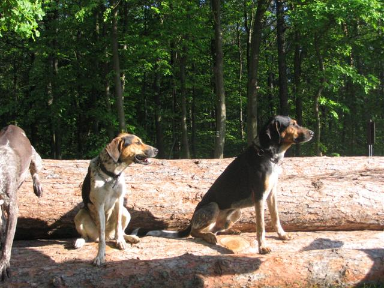 Docela povedený dílčí výsek - kousek Bora a Jaga s Fordem. Bela se nám tentokrát do záběru nijak často nedostala. Ke konci, když Nela pronásledovala Bora a Bela zase Forda se nám naše velkodarácké slečny srazily v plné rychlosti, což je obě velmi překvapilo. No, musela jsem se smát, jak se srazily na jinak docela prostorné louce, naštěstí snad bez následků. Zvlášť Nela pak nějak nemohla pochopit, co se to stalo a tak hopsala od jednoho člověka k druhému, jakoby pátrala po vysvětlení.Ale bylo to úspěšné, už v autě na nás Nela vrhala vyčerpaný až skoro vyčítavý výraz, že jsme jí zase dali pěkně zabrat, s těmi našimi výlety. Za strakatou sílu, vzhůru k dalším procházkám:-) PS: Povídání o této procházce si můžete přečíst i na stránkách Jagy a na Beliných stránkách v Trampotách.
|